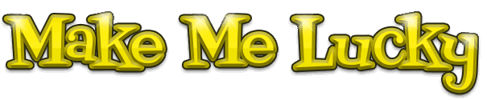

Welcome to Make Me Lucky the internet's luck generator and good luck charm where you can find good fortune, prosperity, triumph and success at the touch or a button!
You may wonder whether simply pressing a button can really make you luckier, but anyone who knows a bit about programming will easily be able to see from looking at the code that pressing the button makes lucky become true and increases the value of luckiness. We are certain that it works at least as well as any other good luck charms and we are also sure that the more people who press the Make Me Lucky button, the more lucky things will happen to people who've pressed it!
Professor Richard Wiseman from the University of Hertfordshire did extensive research into hundreds of people who either considered themselves very lucky or unlucky. He discovered that what people think and the way they behaved had a big effect on their fortune.
Lucky people are much better at spotting opportunities and capitalising on them than unlucky people. Professor Wiseman found everyone can improve their luck by following these four pieces of advice:
Had Make Me Lucky been available when he did his research, we are pretty sure he would also have added pressing the Make Me Lucky button to his advice!
This site is provided for entertainment purposes, the value of your luck may go down as well as up. If however you do become extremely rich after using this service, please send us some money as it will clearly have been thanks to us.
Created by Joseph Maynard
Home